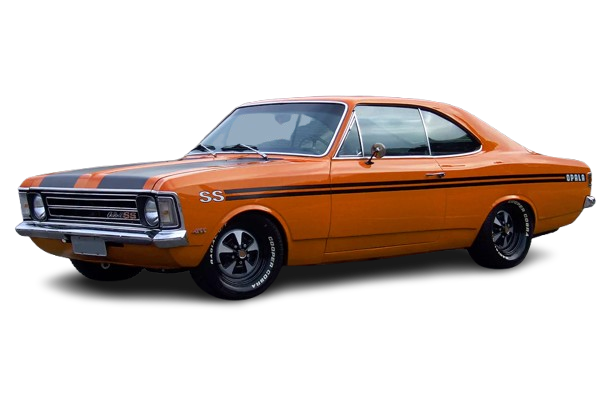
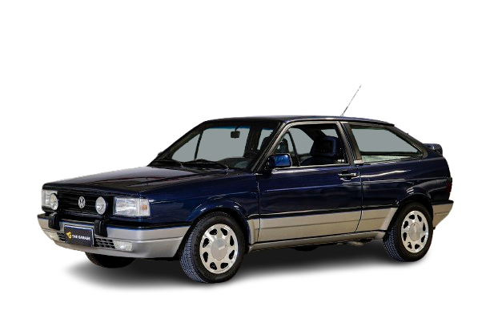
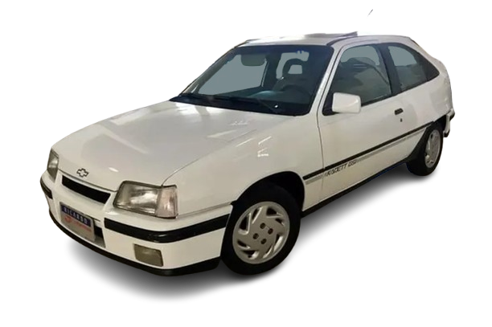
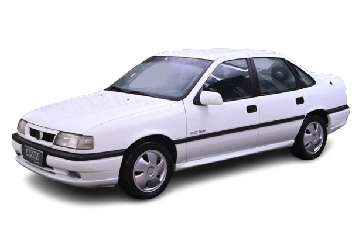
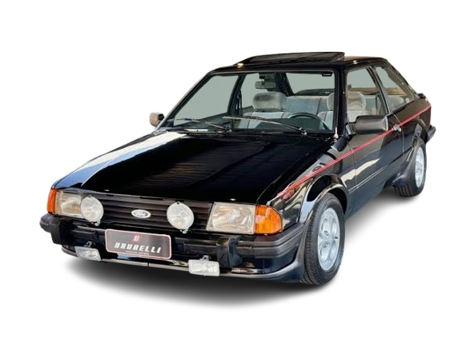
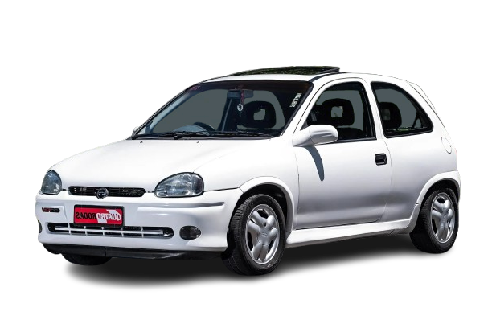

A indústria automobilística brasileira tem suas raízes no início do século 20, com importações pontuais e montagem artesanal de veículos. Mas foi a partir da década de 1950, com o governo de Juscelino Kubitschek e seu projeto desenvolvimentista (“50 anos em 5”), que o setor ganhou estrutura de verdade. O objetivo era criar um parque industrial forte, e o setor automotivo era central nesse plano.
Nesse contexto, gigantes como Volkswagen (1953), Mercedes-Benz, Ford, Chevrolet (GM) e Fiat (1976) passaram a fabricar carros no país. A produção nacional era incentivada com políticas de substituição de importações, o que levou o governo a proibir a importação de carros a partir de 1976, com raríssimas exceções. Assim, por quase duas décadas, o brasileiro só podia comprar carros feitos no Brasil, o que levou ao surgimento de uma indústria automotiva fechada e autossuficiente, mas também limitada em tecnologia e variedade.
OS PRIMEIROS ESPORTIVOS NO BRASIL
Mesmo com essa limitação, surgiram esportivos que se tornaram ícones locais:
Puma GT, com design esportivo e mecânica Volkswagen, feito em fibra de vidro, foi sucesso nos anos 70.

SP2, lançado pela VW em 1972, era belo e inovador, mas seu desempenho era modesto.

MUSCLE CARS BRASILEIROS
Chevrolet Opala SS, com motor 4.1 de seis cilindros, virou um clássico nacional.

Ford Maverick GT V8, com motor 302, era o muscle brasileiro por excelência.

ESPORTIVOS DOS ANOS 80 E 90: A ERA DE OURO
Volkswagen Gol GT, GTS e GTI – o GTI, de 1989, foi o primeiro carro com injeção eletrônica no Brasil.

Kadett GSi, com visual moderno e painel digital, marcou época.

Uno Turbo i.e., lançado em 1994, foi o primeiro carro turbo de fábrica no país.

Vectra GSi, Escort XR3, Corsa GSi, entre outros, marcaram a década.
  
ABERTURA DA IMPORTAÇÕES EM 1990
Em 1990, o então presidente Fernando Collor de Mello decretou o fim da proibição de importações de carros. Essa medida representou uma ruptura histórica: pela primeira vez em quase 15 anos, o brasileiro pôde comprar carros de marcas estrangeiras novamente. Isso forçou as montadoras locais a melhorarem design, desempenho, segurança e acabamento para manterem competitividade.